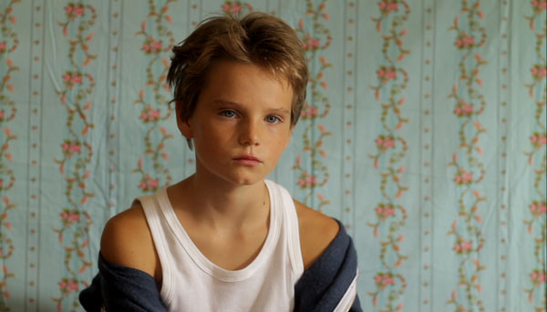
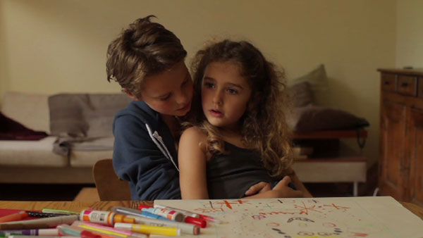
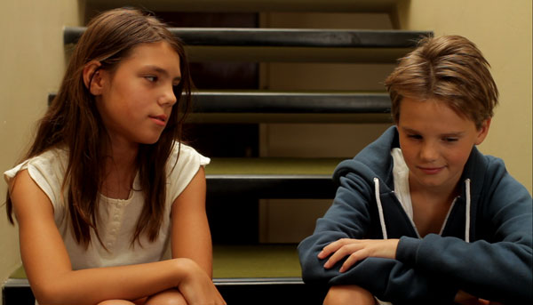

-
A Summer Place: Céline Sciamma’s Tomboy
by Courtney A. Fiske November 28, 2011
Rarely does a film succeed in rendering the world of a child from a child’s point of view. Too often, the filmmaker’s perspective, de facto adult, prevails. The portrait of childhood that results is tinged with sepia tones, as if all children possessed a preternatural awareness of their impending loss of innocence, years before the fact. Washed in the nostalgia of grown-ups, such films strip children of complexity and quirk, flattening them into figures who inspire a mix of melancholy and self-pity.
Céline Sciamma’s film Tomboy successfully avoids these tendencies. At once sincere and free of sentiment, Sciamma’s sophomore feature effort (after her 2007 debut, Water Lillies) delivers a vignette of childhood whose subtlety eschews cliché and easy explanation. The film follows Laure, the ten-year-old “tomboy” of its title, who moves with her parents and younger sister to Noisiel, an eastern suburb of Paris, in the early months of summer. Laure’s family harbors few reservations about her boyish demeanor: her mother, genial and heavily pregnant, spends most days supine in bed, while her father works during the week. Laure is left to play with six-year-old Jeanne, an ebullient and decidedly more “girly” girl. When Laure first encounters a child of her own age, a girl named Lisa, she find she is mistaken for a boy. “T’es nouveau?” — “Are you new?” — Lisa queries, using the masculine “nouveau” instead of the feminine “nouvelle.” Rather than correct Lisa’s error, Laure plays along, deeming herself “Mikael” and endeavoring to play the authentic boy.
Portrayed by French actress Zoé Heran, Laure easily passes for a member of the opposite sex, even when she’s not consciously acting the part. Tomboy opens with a low-angled close-up of the back of Laure’s head, level against a verdant background blurred by motion. Hair cropped and clad in a blue T-shirt, the child on the screen seems unambiguously male. The camera cuts to a shot of the sun flitting through treetops, then to a close-up of Laure’s hand wafting in the breeze. The soft hum of tire against road alerts us to the fact that we are looking out of the roof of a car, and the camera jumps to a close-up of Héran’s face drifting up and down in the air, her eyes closed as if in meditation. Laure has been immediately aligned with nature, the realm of raucous boyhood, far from the domestic spaces conventionally occupied by girls. Indeed, during the film’s first scenes, Sciamma gives no indication that Laure’s identity is other than Mikael. Only fifteen minutes into the film do we realize that Laure is leading a double life, when she rises from the bathtub, fully nude.
Sciamma’s direction deftly cues the viewer to redouble Lisa’s mistake, most obviously by employing a binary color scheme, where blue means boys and red means girls. As Laure wanders through her new home, she passes through a blue-walled bedroom — hers, we learn in the ensuing scene — then moves into a red-curtained room, where her sister lies atop a pink comforter. Jeanne, the film’s only character to abide by the unspoken covenants of girlhood, hews to her bedroom’s palette. Laure, who straddles both genders, always sports an item of either color and at times dons both at once: A blue sweatshirt, a red bathing suit, or red shorts with a blue tank. Laure’s friend and burgeoning love interest, Lisa, is associated with the composite of blue and red, purple: She is twice costumed in a lavender tanktop and the walls of her apartment’s foyer, highlighted in the movie’s climatic scene, are mauve. These blendings befit Lisa’s attraction to Mikael’s feminized brand of masculinity, at once sensitive and aggressive.
Sciamma’s sensibility is minimalist, her cinema more inclined to delete than to add. Dialogue is one of Tomboy’s principle excisions, its absence most extreme in moments of peak dramatic tension, where conversation dulls or disappears altogether. Laure is an unusually laconic child: Unable to express feelings verbally, she renders them through discreet facial expressions — an upturn of the lips here, a wrinkle of the nose there. Absent histrionics, Laure’s restrained emotional palette leaves her interiority somewhat opaque. Rather than dictate emotion, Sciamma’s subtle and agile direction allows us to attempt our own judgment about Mikael, whether he may be a passing phase or something more serious.
Laure manages to transcend the constrictions of gender, at least for a summer. Other characters are not so free. When the boys suggest a game of soccer, Lisa replies with a groan: “It’s boring!” In response, one of the boys smartly suggests that she play the cheerleader. “I don’t have a choice,” Lisa confides to Laure. “They don’t want me to play. They say I stink.” In Sciamma’s vision, the boys possess a physical agency that the girls cannot: a certain puissance, ironically epitomized by Mikael’s swagger and weighted contrapposto. To be female is to be forced into the position of an observer, to remain indoors while the boys venture out. The consequences of this gender dichotomy are understated but telling: When playing the boy, Laure simply takes up more space.
As the summer wears on, Laure must go to extreme lengths to maintain her deceit. After a round of soccer, while the boys relieve themselves in an open field, Laure ventures into the woods to squat in solitude. Having found a suitable spot, she looks left, then right, breathing heavily with the anxiety of being caught. When a comrade calls out for Mikael, Laure rises in a panic, her shorts wet with urine. Later, in preparation for a swimming trip, she fashions a fake phallus from green modeling clay. Positioning the prosthesis in her newly truncated swimsuit, Laure examines her profile in the mirror, then gives a wry smile. Though outré, such moments carry a comic air. Tomboy revels not in punishment but in play; its narrative is far from a linear, ponderous plod toward Mikael’s unmasking.
The spaces and textures of childhood furnish Tomboy’s true subject. Sciamma works with her camera low to the ground, capturing her prepubescent subjects straight on, without the angled perspective of a grown-up looking down. Her choice of the Canon EOS 7D, fundamentally a still camera, endows each shot with a strong cinematographic feel: faces and bodies close up stand in sharp focus, while the background is manifest as a blurry spectrum. To the viewer the film feels like childhood, or at least the way we remember childhood: slightly out of focus and vaguely photographic. Save for Laure and Jeanne, all of the children are portrayed by non-professionals, many of them Héran’s friends in real-life: an adept casting choice that imbues their world, however hermetic, with remarkable naturalism. Child’s play — here always imaged in the outdoors — seems to transpire outside of time. The forest, with its spindly trees, muted tones, and soft gobs of sunlight, stands as an imaginary, unspecific place, but here the place of childhood writ large, absent historical markers and social context. Aside from a brief scene where Laure’s father works on a laptop, Sciamma eschews telltale temporal signs: Cultural allusions are spare and speech is neutral, stripped of slangish idiolects.
Though Laure’s predicament is far from generic, Tomboy manages to distill something universal: It paints that moment, poised on the cusp of adolescence, when make-believe can still be guileless. Although abutting her teens, Laure is still very much a child. Her self-structuring as Mikael has an air of casual innocence, and her increasingly amorous interactions with Lisa, free from the complications of pubescent lust, feel simple and sweet, not strained. Laure could easily be flattened into a Freudian case study; the tomboy as psychological type is, after all, penis envy personified. Yet Tomboy’s tone remains light, not peremptory, and its pared-down script abjures analytic jargon. No clear-cut motivation is imputed to Laure’s fashioning herself as Mikael, and Tomboy avoids labels, like “lesbian” and “homosexual,” that might provide one. The film’s sensitive, yet distanced, treatment of its protagonist eludes the heavy-handed interpretation which is all too often the pitfall of work — artistic, literary, and otherwise — on issues of gender and sexuality. Attuned to idiosyncrasy, Tomboy’s portrait unsettles our conventional categories.